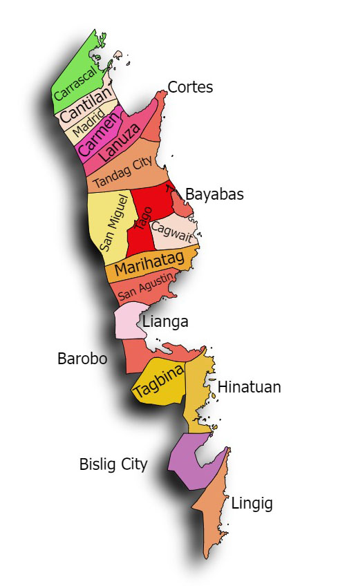
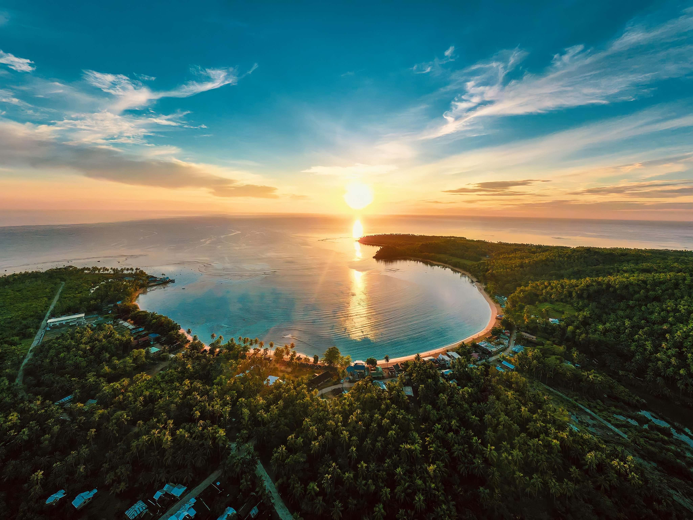

ABOUT SURIGAO DEL SUR
Surigao del Sur is naturally advantaged. It is located in the northeastern coast of Mindanao facing the Pacific Ocean. It is approximately 300 kilometers in the length and 50 kilometers at its widest stretch.
It is bounded on the Northwest by the Province of Surigao del Norte; on the Southeast by Davao Oriental; on the East by the Pacific Ocean; and on the West and Southwest by the provinces of Agusan del Norte and Agusan del Sur. The Diwata Mountain Range lines the northwestern boundaries of the province.
Surigao del sur is a province of the infant CARAGA REGION.



